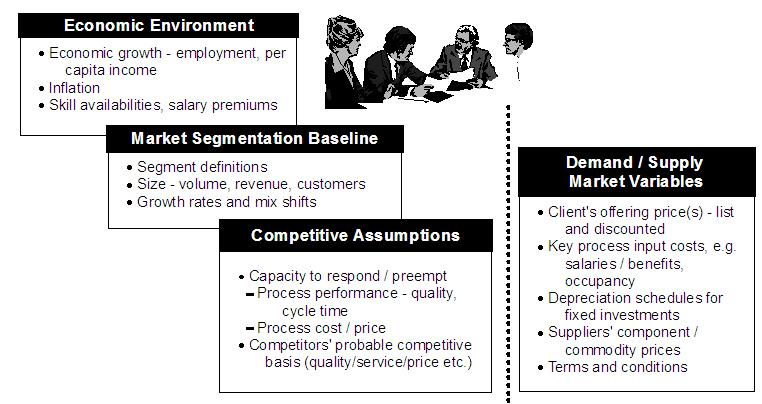
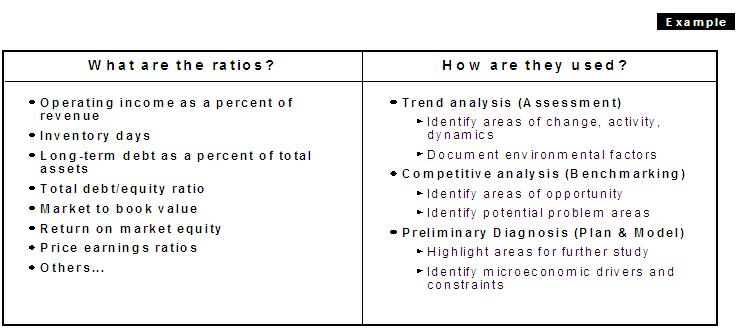
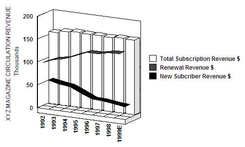
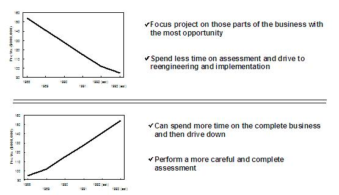
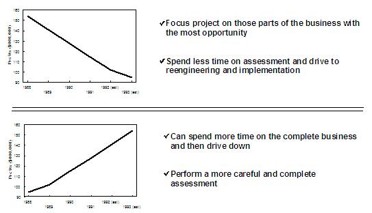
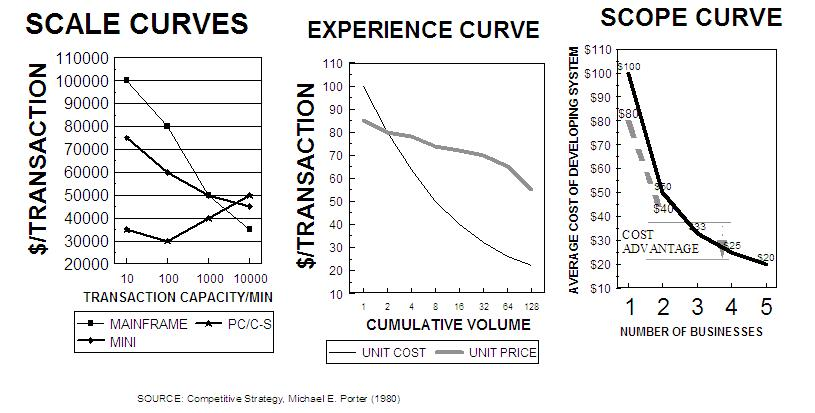

| Example: Financial Assessment |
 |
|
| Related Elements |
|---|
For every client, the team needs to compute a set of generic and industry-specific ratios during the proposal or initialization phases. These ratios should be used in at least three critical ways:
Baseline assumptions include:  Data for the Financial Assessment are generally available from public sources like SEC 10-K/10-Q filings, industry associations, and 3rd party databases, as well as from client finance personnel. Further insights and explanations can often be gained from reviewing the trade press and interviewing client executives and industry experts.


 On the other hand, where profits have been trending steadily and strongly upward, management should be focusing on "possibilities". Therefore, the engagement should be built around a comprehensive strategic analysis of the business, searching for the best opportunities for big, long-term wins. While "quick hits" should be addressed as they arise, they should be treated as part of a broader effort. Similarly, the early financial assessment work can help guide how the team prioritizes its recommendations. When the profits have been declining steadily and sharply over a long time, the "quick hits" projects are important because they can yield results in the next few quarters that can slow or reverse the trend. Instead of prioritizing as we normally would, on the basis of NPV (Net Present Value), these trends usually indicate that we should prioritize on the basis of payback period. Why? Because high NPV projects often require large initial investments to yield large cash flow returns in subsequent years, they can create negative cash flows that a troubled company may not be able to handle. Fast payback projects, on the other hand, may be practically self-funding, contributing immediately to both earnings and cash flow. In the case of a company with strong and steadily growing earnings, "quick hits" should be viewed primarily as "prototypes" for testing the long-term vision.
 Using IRR (Internal Rate of Return) can dispense with the complexity of discount rate selection, but introduces some issues of ambiguity which will be discussed in "advanced topics". The appropriate strategy for any specific competitor to undertake depends on its competitive position and the structure of the industry, as quantified in the preceding discussion. The preceding ratio analysis coupled with a quick literature review and a few client interviews should give the consulting team a pretty good idea about the underlying economics of the business.
 However, to prove the hypotheses it is sometimes necessary to develop a more complete understanding of the specific cost dynamics. In these cases, you will need to quantitatively assess the actual Scope, Scale, and Experience economics of the industry.
To do this, you will need to turn to a subject matter expert to structure the analysis and interpret the data. |
| © Copyright IBM Corp. 1987, 2012 All Rights Reserved Property of IBM These materials are intended only for use as part of an IBM engagement |